|
夏休みチャットの記録 |
|
||
|
夏休みチャットの記録 |
|
||
|
２０１１年８月７日（日） ２０：３０〜２２：３０に、夏休みチャットを開催しました。 前回のチャットからだいぶ間が空いてしまいご迷惑おかけしましたが、今回もたくさんの方にご参加いただき、２時間オール・ミルモの話題でとても盛り上がりました(^^)。 そして恒例のなりきりチャットも開催！ 今回はいつも以上に難しいテーマでしたが、皆さんの盛り上げにより私も予想していなかった展開が！！ それではチャットの模様をダイジェストでお伝えします。 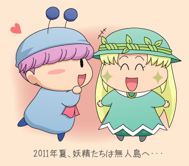 (2011/8/10) |
||
↓今回は葉月さんが参加１番乗り。
そしてUFO目撃の証言を！？
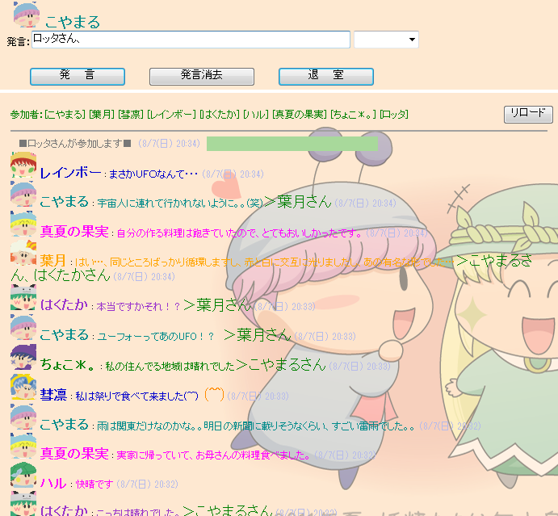
↓皆さん、相変わらずミルモの妄想バリバリで安心しました^^
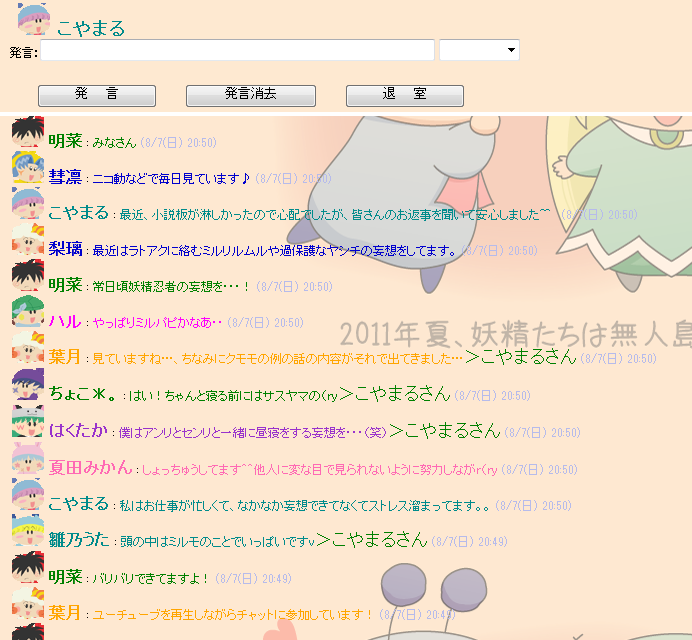
↓梨璃さんから、夏らしくかき氷のシロップの質問です。
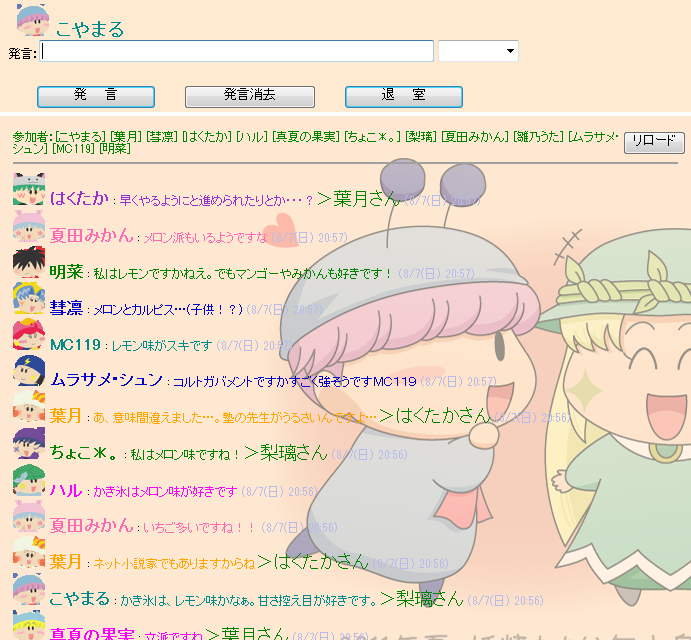
↓なりきりチャットに向けて、まずは担当妖精決め。
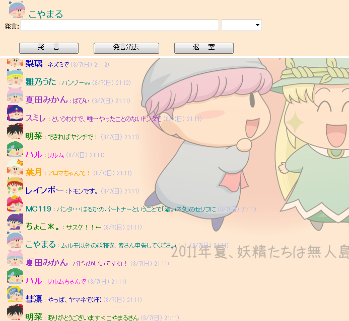
今回の担当妖精が決まりました！
・・・おや？
|
★出演者紹介（五十音順）★ アロマ（葉月さん） |
↓何と！主人公ミルモが不在とは…。とりあえず不在のまま話は進みます^^;
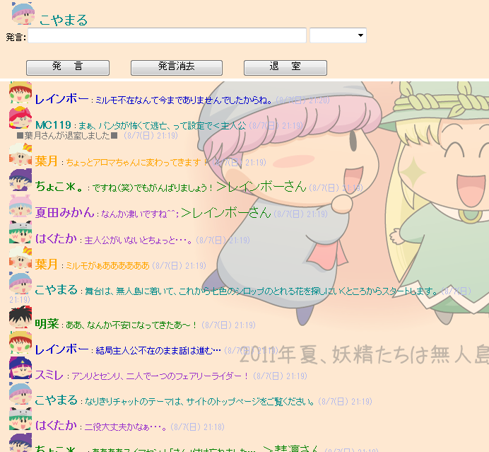
|
〜今回のなりきりチャットのテーマ〜 ・お嬢様アロマちゃんの別荘のある無人島に招待された妖精たち |
↓アロマが地図を差し出しました。
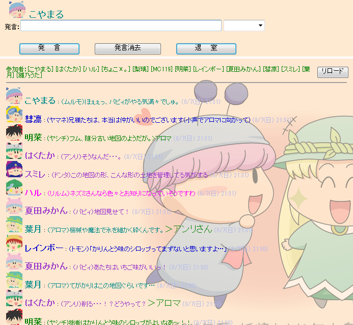
↓花を守る七色の鳥が妖精たちの前に出現！
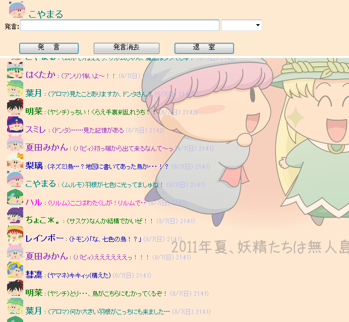
↓妖精たちのいろんな絡みが発生しています^^
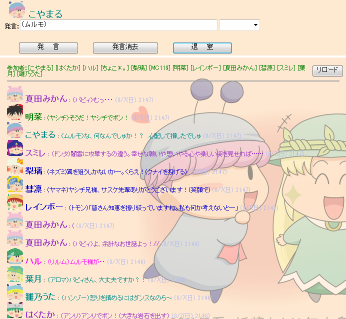
↓ドンタのアドバイスに従い、みんなで気持ちを一つにしましょう♪
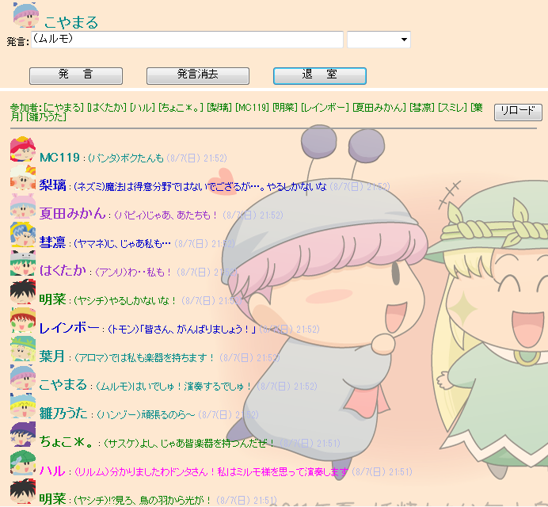
↓Fun!Fun!★ふぁんたじーの大合唱！
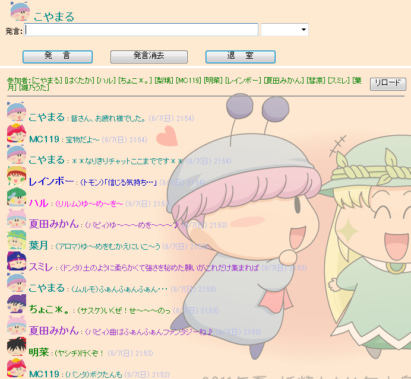
↓なりきりチャットの感想でも盛り上がりました。
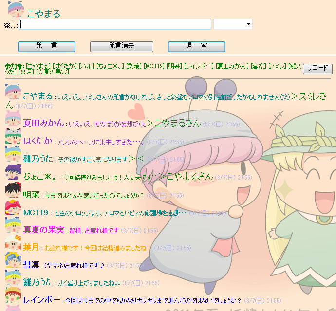
↓今回は初参加の明菜さんが大活躍！
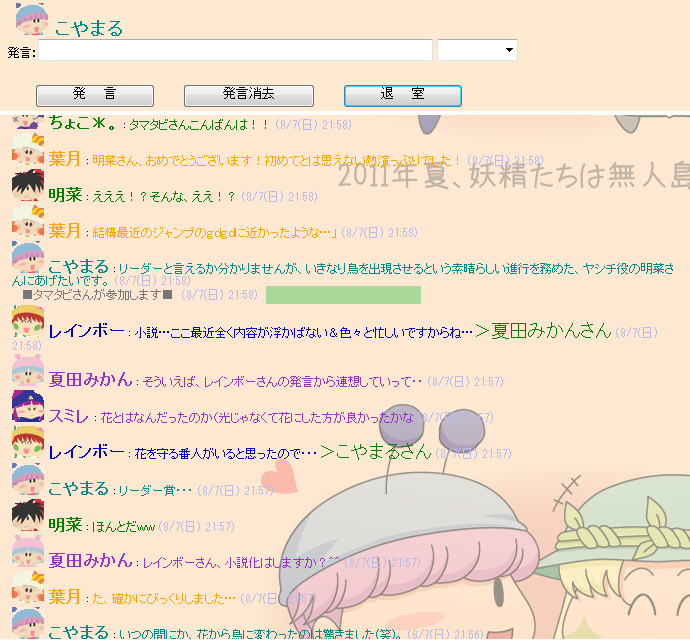
↓なりきりチャット終了後は、お気に入りのアニメのエピソードの話題で。
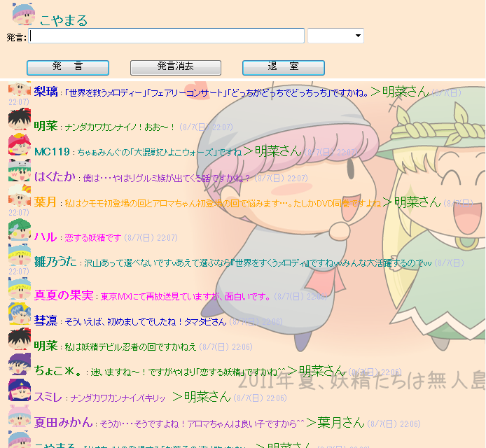
↓ミルモ話はまだまだ続く・・・
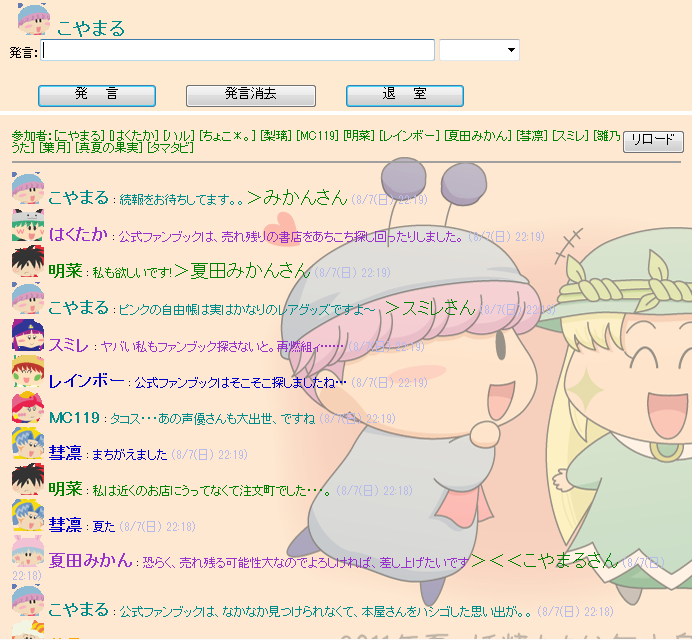
↓皆さん、楽しい夏を過ごしてくださいね♪
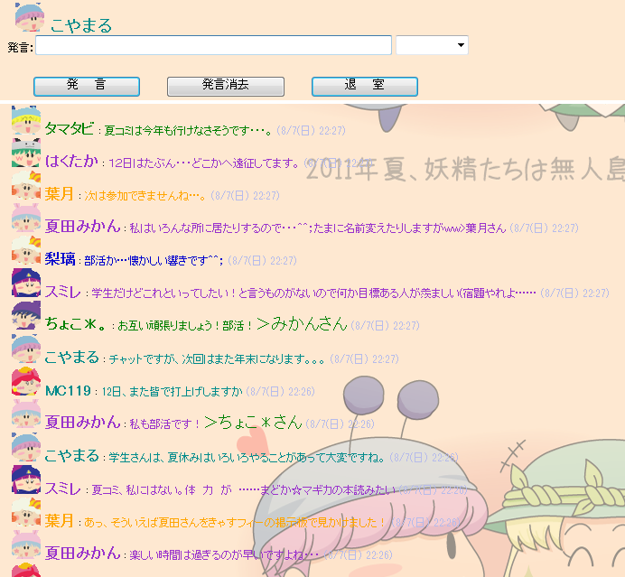
今回も皆さんのお力により、とても楽しいチャット会となりました。
次回のチャットは年末を予定していますので、またぜひお気軽に参加してくださいね。
 |